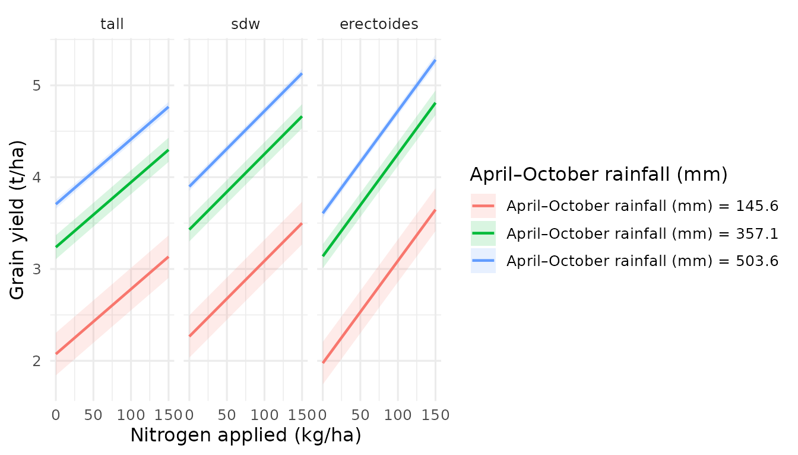
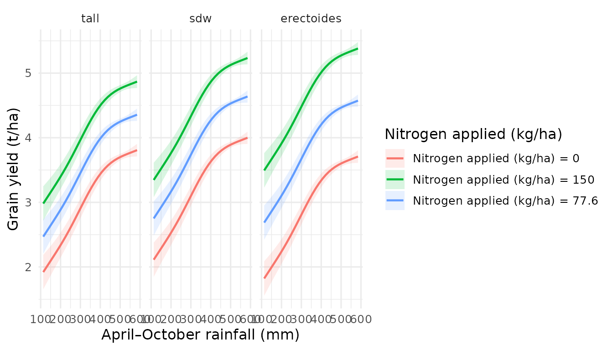

Stratified Surfaces — Comparing Groups in 3D
Source:vignettes/stratified-surfaces.Rmd
stratified-surfaces.RmdIntroduction
A single prediction surface shows how the response changes across two continuous variables. But what if different groups — varieties, treatments, patient cohorts — respond differently to those same variables? Are the surfaces parallel, diverging, or crossing?
Stratified surfaces answer this question by overlaying multiple coloured surfaces in a single 3D plot. Each surface represents one level of a categorical variable. The visual comparison is immediate: where surfaces separate, groups differ; where they cross, the “best” group changes.
This vignette demonstrates how to create, customise, and interpret
stratified surfaces with effectsurf.
The by parameter
The key to stratified surfaces is the by argument in
surf_prediction(). When you supply
by = "group", effectsurf generates a separate
prediction surface for each level of that categorical variable, holding
all other non-focal variables at their marginalised values (mean for
numeric, mode for factors).
es <- surf_prediction(model, x = "var1", y = "var2", by = "group")Each surface is rendered in a distinct colourblind-safe colour (Wong, 2011) and can be toggled on/off via the interactive legend.
Example 1: mtcars by cylinder count
We start with a simple example using the built-in mtcars
dataset. The question: does the joint effect of weight (wt)
and horsepower (hp) on fuel economy (mpg)
differ across engine configurations (4-, 6-, and 8-cylinder)?
library(effectsurf)
library(mgcv)
# Fit a GAM with cylinder count as a factor
model_mtcars <- gam(
mpg ~ s(wt) + s(hp) + factor(cyl),
data = mtcars
)
summary(model_mtcars)$r.sq
#> [1] 0.8690723Now create the stratified surface:
es_cyl <- surf_prediction(
model_mtcars,
x = "wt", y = "hp",
by = "cyl",
x_length = 30, y_length = 30,
labels = list(
x = "Weight (1000 lbs)",
y = "Horsepower",
z = "MPG",
title = "Fuel economy by cylinder count"
)
)
es_cylThe printed output shows three strata (4, 6, 8 cylinders), each with its own prediction grid and summary statistics.
To visualise interactively (opens in your browser or RStudio Viewer):
plot(es_cyl)The three surfaces should appear vertically offset — 4-cylinder cars
achieve higher MPG at any given weight and horsepower combination, with
8-cylinder cars lowest. The surfaces are roughly parallel, suggesting
the cylinder-count effect is largely additive (no strong interaction
with wt or hp).
Example 2: Barley yield by variety type
For a more realistic example, we use the bundled
barley_trials dataset — simulated data inspired by
Australian national barley agronomy trials. The question: do different
variety types (tall, semi-dwarf, erectoides) respond differently to the
joint effects of nitrogen fertiliser and growing-season rainfall?
data(barley_trials)
barley_model <- gam(
yield ~ s(rainfall, k = 5) +
nitrogen + seedrate + variety_type +
nitrogen:variety_type +
s(trial, bs = "re"),
data = barley_trials,
method = "REML"
)
summary(barley_model)$r.sq
#> [1] 0.9343014Create the stratified surface:
es_barley <- surf_prediction(
barley_model,
x = "nitrogen", y = "rainfall",
by = "variety_type",
x_length = 30, y_length = 30,
labels = list(
x = "Nitrogen applied (kg/ha)",
y = "April\u2013October rainfall (mm)",
z = "Grain yield (t/ha)",
title = "Yield response by variety type"
)
)
es_barley
plot(es_barley, opacity = 0.85)In the interactive plot you should observe that the surfaces diverge as nitrogen increases — erectoides varieties are more responsive to nitrogen than tall or semi-dwarf types. This reflects the nitrogen-by-variety-type interaction built into the model.
Subsetting strata with levels_needed
When a categorical variable has many levels, overlaying all of them
becomes cluttered. The levels_needed argument lets you
select a subset of levels to visualise:
es_subset <- surf_prediction(
barley_model,
x = "nitrogen", y = "rainfall",
by = "variety_type",
levels_needed = c("tall", "sdw"),
x_length = 30, y_length = 30,
labels = list(
x = "Nitrogen applied (kg/ha)",
y = "April\u2013October rainfall (mm)",
z = "Grain yield (t/ha)",
title = "Tall vs. semi-dwarf varieties"
)
)
es_subset
plot(es_subset, opacity = 0.85)With only two surfaces, it is much easier to pinpoint exactly where and by how much they diverge.
Controlling visual clarity
When overlaying multiple semi-transparent surfaces, small adjustments to the rendering options can make a large difference.
Opacity. The default of 0.85 works well for 2–3 surfaces. Increase to 0.9–0.95 for dense overlays where you need surfaces to stand out; decrease to 0.6–0.7 if you want to see through the top surface to those below:
plot(es_barley, opacity = 0.9)Wireframe. For publication or when colour printing is unavailable, wireframe mode replaces filled surfaces with a mesh. This avoids transparency artefacts entirely:
plot(es_barley, wireframe = TRUE)Legend. In the interactive viewer, clicking a stratum name in the legend toggles that surface on or off. Double-clicking isolates a single surface. This is invaluable for pairwise comparisons within a multi-group plot.
Profile projections from stratified surfaces
Interactive 3D plots are excellent for exploration, but publications
and reports require 2D figures. surf_profile() extracts
slices from the surface at fixed values of one variable, producing
publication-ready ggplot2 line plots.
For stratified surfaces, each slice is faceted by stratum, making group comparisons straightforward:
# How does yield change with nitrogen at three rainfall levels?
surf_profile(es_barley, along = "x", at = c(150, 350, 500))
The panels show the nitrogen–yield relationship for each variety type, at low (150 mm), moderate (350 mm), and high (500 mm) rainfall. You can read off:
- Which variety type achieves the highest yield at each rainfall level.
- Whether nitrogen response curves differ across groups (interaction).
- The rainfall threshold above which nitrogen application becomes economically worthwhile.
You can also slice along the y-axis to examine the rainfall response at fixed nitrogen rates:
surf_profile(es_barley, along = "y", at = c(0, 80, 150))
Interpreting stratified surfaces
The spatial relationship between overlaid surfaces tells a clear story about group-by-variable interactions:
| Surface pattern | Interpretation |
|---|---|
| Parallel surfaces | No interaction — groups differ by a constant offset |
| Diverging surfaces | Quantitative interaction — one group is more responsive |
| Crossing surfaces | Qualitative interaction — the “best” group changes across the predictor space |
Parallel surfaces mean the categorical variable has
an additive effect. The group difference is the same regardless of where
you stand on the x–y plane. The mtcars cylinder example
approximates this.
Diverging surfaces indicate that one group benefits more (or less) from changes in x or y. The barley example shows divergence along the nitrogen axis: erectoides varieties gain more yield per unit of nitrogen.
Crossing surfaces are the most practically important. They signal that the optimal group depends on the combination of x and y values. For instance, if variety A out-yields variety B at low rainfall but variety B overtakes at high rainfall, management recommendations must be site-specific.
Finding group-specific optima
surf_optimum() locates the x–y combination that
maximises (or minimises) the predicted response. For stratified
surfaces, it reports the optimum separately for each
stratum:
surf_optimum(es_barley, type = "max")
#> variety_type nitrogen rainfall estimate conf.low conf.high
#> <fctr> <num> <num> <num> <num> <num>
#> 1: tall 150 585 4.868074 4.769478 4.966671
#> 2: sdw 150 585 5.233336 5.135384 5.331288
#> 3: erectoides 150 585 5.380613 5.280795 5.480430This immediately reveals whether the optimal management combination (e.g., nitrogen rate and target rainfall environment) differs across variety types. If optima diverge substantially, management should be tailored to the variety.
For the minimum (e.g., identifying the worst-case scenario):
surf_optimum(es_barley, type = "min")
#> variety_type nitrogen rainfall estimate conf.low conf.high
#> <fctr> <num> <num> <num> <num> <num>
#> 1: tall 0 113 1.920255 1.653219 2.187291
#> 2: sdw 0 113 2.112014 1.846541 2.377488
#> 3: erectoides 0 113 1.821368 1.554635 2.088101Exporting stratified surfaces
Save the interactive visualisation as a self-contained HTML file for sharing with collaborators who do not have R installed:
surf_export(es_barley, path = "barley_stratified_surface.html")The exported file is fully portable — open it in any modern web browser to rotate, zoom, and toggle strata. No server or R session is required.
Summary
| Task | Function / argument |
|---|---|
| Create stratified surface | surf_prediction(..., by = "group") |
| Subset levels | surf_prediction(..., levels_needed = c(...)) |
| Adjust opacity | plot(es, opacity = 0.9) |
| Wireframe mode | plot(es, wireframe = TRUE) |
| 2D profile slices | surf_profile(es, along = "x", at = ...) |
| Group-specific optima | surf_optimum(es, type = "max") |
| Export to HTML | surf_export(es, path = "file.html") |